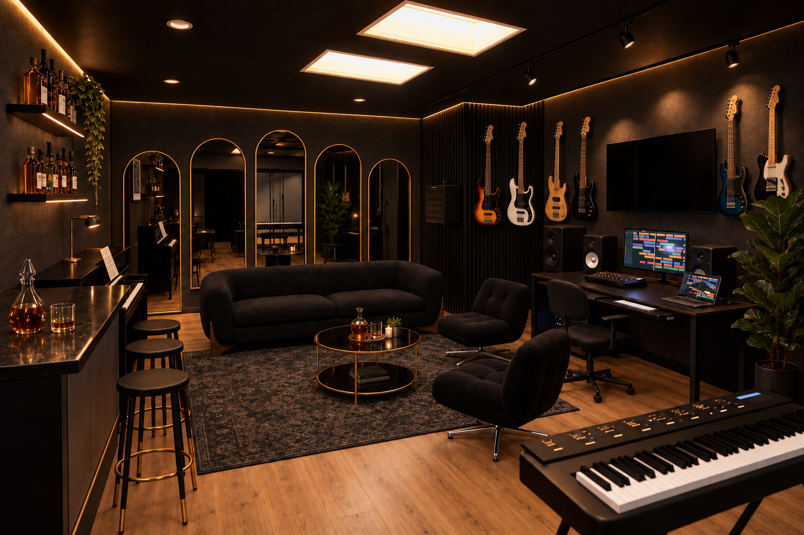
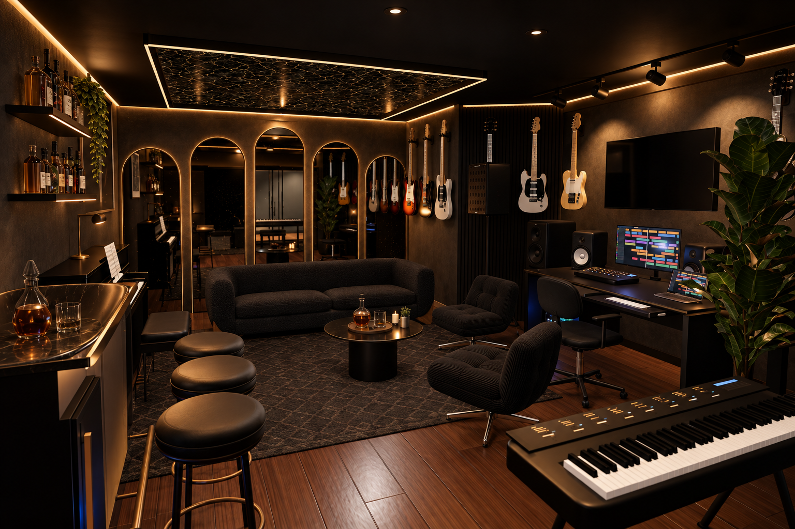

🧾 FULL ROOM PROCUREMENT · V1.6 · USD
A $25,000
ceiling.
Materials, furniture and paid installation.Tax, delivery, contingency and recap film.Every original element bought, retained or deferred.
See the included scope ↓🟡 PLANNING BUDGET WITH RESERVES
Loading…
Retail prices are sourced. Labor is an allowance.
Commit orders only after field checks and fixed trade bids keep the full project below $25,000.
Commit orders only after field checks and fixed trade bids keep the full project below $25,000.
🖼 THE REVISED ROOM
The $25k direction.


⚖ THREE WAYS TO ALLOCATE $25,000
Choose the priority.
Each option includes paid labor, tax, delivery, 10% contingency and the $1,000 recap allowance. Options are complete alternatives; their upgrades cannot be added together within the same cap.
Download exact option line changes · JSON ↓🛠 BALANCED PACKAGE · BASELINE LEDGER
Keep the room’s character.
Choose where the money goes.
🟢 Included
- New black acoustic fabric on sound existing core/track; new black slat accents.
- Five tall gold arches with warm halos, black Alpine sofa and two DYVLINGE swivel chairs.
- 48-inch DIY bar, laminate counter, smoked acrylic, two shelves and three narrow black/gold stools.
- 50-inch TV and mount, six instrument hangers, desk/rack accessories, coffee table, patterned rug and styling.
- Cove/bar lighting, task-light service, electrical work, paid assembly and AV commissioning.
🟡 Retain after inspection
- Photographed warm wood floor, existing black ceiling and both ceiling openings.
- Existing worktable and rolling chair; dimensions, load and condition still unrecorded.
- Recorded piano/bench and studio equipment. Inventory says Clavinova; NU1X identity remains unverified.
- Existing main downlights, circuit routes, doors, storage fronts and usable acoustic core.
- Both raised storage-door areas: measure before deciding finish, trim or repairs.
⏸ Priced and deferred
- Decorative ceiling mirror/panel and its separate halo.
- Beverage fridge; bar bay stays removable and ventilated.
- Full floor replacement, bespoke antique mirror glass, custom stone and custom desk.
- App/scene automation, four additional instruments and new booth acoustic treatments.
- Condition-triggered platform repairs and equipment replacements. Required repairs take priority over decorative purchases.
This v1.6 purchasing scope controls the $25,000 plan. The older 3D model and v1.5 installation packet preserve the fuller design target. The new concept above illustrates the substitutions; it is not a measured construction drawing.
📍 FIND IT IN THE DESIGN
The original target,
with every element costed.

37build scopes
—cost and inventory lines
—installation materials mapped
—advertised-price lines
📐 COST BASIS
Get measured.
Get fixed bids.
- Recorded room area: 298.75 sq ft. Ceiling, bay returns and both raised storage-door areas still need field checks.
- Retained gear costs $0 to buy. Move, service and commissioning labor is separate.
- Shared drivers, rack fittings and supplied hardware are counted once. Excluded alternatives stay visible.
- 16 electrician hours and the listed assistant/trade hours are paid allocations, subject to returned quotes.
- Confidence: moderate for retail costs; low for the final total until measurements and bids return. Material damage, missing supports or required building-system work takes priority within the cap.
- No orders or construction are recorded as complete. Greg’s coordination time and existing Astra service are owner contributions; no new software subscription is assumed.
📋 V1.6 INSTALLATION AMENDMENT
Build in this order.
- Measure and prove reuse. Complete the survey packet, including both raised storage-door areas, room diagonals, delivery path, existing desk, piano model and circuit/fixture inventory. Tape every new footprint at full size; sit on the stools and open each door.
- Release the cost and samples. Obtain fixed bids against the paid hours. Approve one fabric panel, one slat sample and one complete mirror halo. Record tax, freight, available stock, supplied fixings and the remaining cap. Purchase nothing custom before its sample and measurements pass.
- Protect, label and expose supports. Photograph the existing cable routing; label both ends. Protect the retained floor and stage gear. Installer opens only the needed backing locations; confirm wall support for the TV, six guitars, five mirrors and bottle shelves before covering it.
- Run the electrical work. Licensed electrician confirms existing circuit capacity, protection and isolation, installs the approved TV power/data route and accessible LED service area, and labels every output. Keep Class 2 wire separate from mains. Seven independent 24V supplies; never join their outputs. Preserve access to ceiling openings and controls.
- Finish the walls and bar. Replace gray fabric with selected black fabric on verified reusable tracks; do not paint acoustic fabric. Fit slat accents to the released backing detail, with access panels preserved. Touch up solid surfaces. Build the bar from the dimensioned cut plan below; test laminate and smoke-film offcuts before applying the visible finishes.
- Hang the arches and aim the light. Use the proposed elevation below only after field confirmation. Installer selects substrate-specific fasteners from the mirror instructions and actual wall. Mock up BLAZE straight legs and Minuet curved heads on separate feeds; match color/brightness and hide transitions. If the result is uneven, reprice a uniform halo before ordering the balance.
- Place the actual furniture. Sofa: 90.5 × 36 × 27.5 in. Chairs: 24.75 × 29.5 × 26.75 in each. Stools: 13.5 × 13.5 × 30 in each. Table: 30.7-in diameter × 18.5 in high. Rug: 93.6 × 123 in. Measure retained desk and piano; do not use the older modeled envelopes as proof.
- Commission and record the result. Test electrical protection, lights at low output/on camera, TV service access, door swings, egress, rack cooling and the full audio path. Photograph finished cable labels and installed parts. Close defects, record actual spend and capture the final room/performance for the recap plan.
The v1.5 installation library supplies the underlying sequence, tools and checks for 37 scopes. Apply this amendment first: deferred components stay unbuilt, and stock-product manuals replace custom-glass/stone details. Field-dependent anchors, wiring and attachment schedules require the installing trade’s release.
🔎 COMPLETE PURCHASING LEDGER
Find. Price. Verify. Order.
AdvertisedEstimateCustom allowanceRetained / included
Quantity and price edits save in this browser. They change the budget; the 3D design keeps its dimensions.
No matching parts. Clear the filters to see the whole room.
📦 KEEP THE WORK